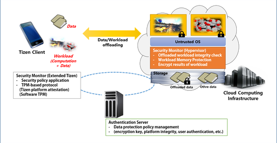

Mobile Cloud Security Framework
Mobile Cloud Security Framework provide safety environment of cloud-based computation and data offloading to mobile devices.
Mobile devices have limited resources, such as storage capacity and processor performance. These restrictions may be alleviated by computation offloading: sending heavy computation code/application to resourceful cloud and receiving the results from the cloud, and data offloading: store large data in cloud storage. However, sensitive data of offloaded computation or stored in cloud storage may be leaked out or modified by compromised operating system of cloud servers. To prevent data leakage or malicious modification, we need to security framework that attest cloud server before computation offloading and data encryption before store in cloud storage. Also, to guarantee data protection during offloaded computation processing, we are developing Extended Page Table (EPT) based memory protection mechanism on server side.
Mobile Cloud Security Framework Overview 